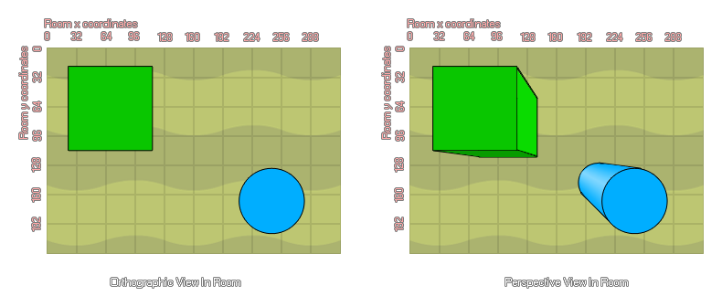

d3d_set_projection_perspective(x, y, w, h, angle)
| Argument | Description |
|---|---|
| x | The x coordinate in the room to look from. |
| y | The y coordinate in the room to look from. |
| w | The width of the projection. |
| h | The height of the projection. |
| angle | The rotation angle of the projection. |
Returns: N/A
You can use this type of projection to create a "top down" view
of your room, where all the elements are given perspective and
depth (ie: the higher the depth, the smaller and further away they
appear from the player). See the image below to get an idea of the
difference between orthographic and perspective views.

d3d_set_projection_perspective(0, 0, room_width, room_height, 0);
The above code sets up a basic 3D perspective projection.